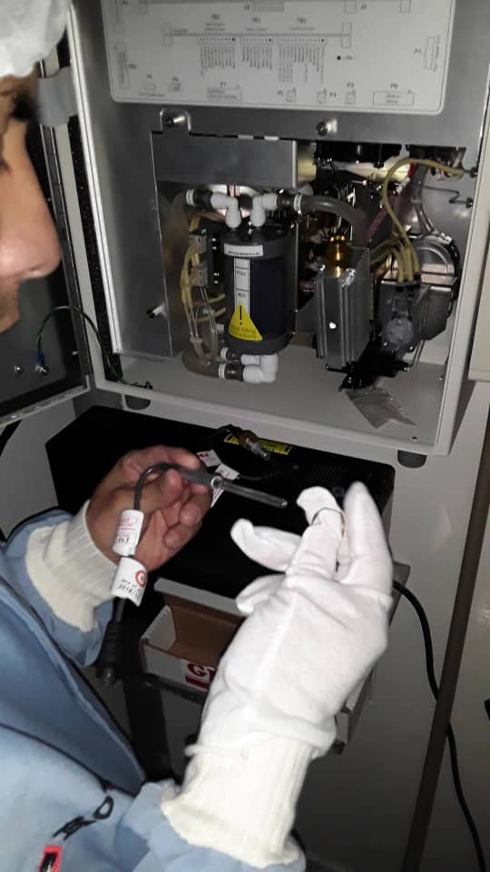
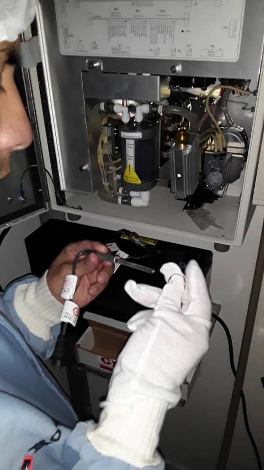

Inicio
Loreal Tecnic C.A
R.I.F J-412190938
Loreal Tecnic C.A es una compañía especializada en mantenimiento preventivo, correctivo e instalación de equipos de laboratorio para el control de calidad.
Servicio
Nuestra empresa Loreal Tecnic C.A
Presta servicios para Tecnología de laboratorio en procesos de producción, alimentos y forraje.
Estamos orientados a los siguientes:
- Equipos para la preparación de muestras, Molinos, Destiladores, Digestores.
- Equipos espectrofotómetros UV visible, NIRS (Infrarrojo Cercano) y FTIR.
- Equipos de cromatografía, HPLC.
- TOC
- Viscosímetros, Densímetros, Reómetros.
- pH metros, KF, Tituladores, Turbidimetros, Conductímetros, Colorimetros.
- Balanzas Analíticas, Balanzas de Precisión y Humedad.
- Campanas de extracción.

Disponemos de técnicos calificados para las principales marcas, con años de experiencia en la área.


 

Marcas
Trabajamos con las marcas lideres en el mercado
Ventas
Representantes exclusivos para Venezuela, Surinam, Trinidad, Guayana, Aruba y Curaçao
SUEZ
PEAK
SUEZ WTS
Diseña y fabrica analizadores de carbono orgánico total (TOC) de Sievers que
permiten la notificación casi en tiempo real de los niveles de carbono orgánico para la
optimización del tratamiento, el control de calidad y el cumplimiento normativo. La medición
precisa de TOC en una planta de tratamiento de agua permite a los operadores reducir los
niveles de TOC, controlar los DBP e implementar la eficiencia y el ahorro de costos en los
procesos de tratamiento. A través de la línea de productos Sievers, SUEZ ofrece una
variedad de analizadores de laboratorio, en línea y portátiles que miden niveles de TOC que
van desde 0.03 ppb a 50,000 ppm, permitiendo a los clientes optimizar su administración de
recursos y fortalecer su desempeño ambiental y económico.
PEAK INSTRUMENTS
Es una empresa ubicada en houston Estados Unidos, que se centra en ofrecer a sus clientes productos y servicios de alta calidad, Con un equipo profesional de producción, en investigación y desarrollo en el control de la calidad, así como los servicios posventa, a fin de garantizar a los clientes, productos con precios asequibles y eficiente servicios.
Ofrece equipos como Espectrómetro visible, UV-Vis, Xenon, Touch Screen, Medidores de Ph , Contuctimetros, Turbidimetros, colorímetros, Medidor de oxígeno disuelto, agitadores, etc.
Logrado obtener patentes y tecnología con certificado internacional CE ISO9001 ISO1400.
Contactanos
- Twitter
Teléfonos
- +58-212-615-9853
- +58-424-122-9450
- +58-424-316-3344
- +58-412-575-2232
- Twitter
Correos
- lorealtecnic@lorealtecnic.com
- lorealtecnic@gmail.com